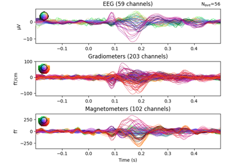

autoreject.get_rejection_threshold¶
- autoreject.get_rejection_threshold(epochs, decim=1, random_state=None, ch_types=None, cv=5, verbose=True)[source]¶
Compute global rejection thresholds.
- Parameters:
- epochs
mne.Epochs The epochs from which to estimate the epochs dictionary
- decim
int The decimation factor: Increment for selecting every nth time slice.
- random_state
int|np.random.RandomState|None The seed of the pseudo random number generator to use. Defaults to None.
- ch_types
str|listofstr|None The channel types for which to find the rejection dictionary. e.g., [‘mag’, ‘grad’]. If None, the rejection dictionary will have keys [‘mag’, ‘grad’, ‘eeg’, ‘eog’, ‘hbo’, ‘hbr’, ‘ecog’, ‘seeg’].
- cv
int|sklearn.model_selectionobject Defaults to cv=5.
- verbosebool
The verbosity of progress messages. If False, suppress all output messages.
- epochs
- Returns:
- reject
dict The rejection dictionary with keys as specified by ch_types.
- reject
Notes
Sensors marked as bad by user will be excluded when estimating the rejection dictionary.
Examples using autoreject.get_rejection_threshold¶

Find global rejection threshold
Find global rejection threshold